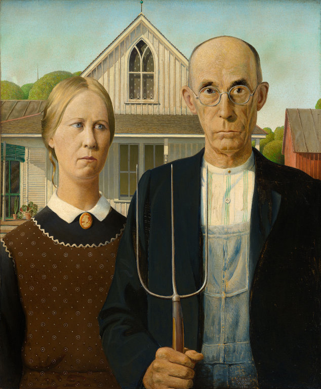
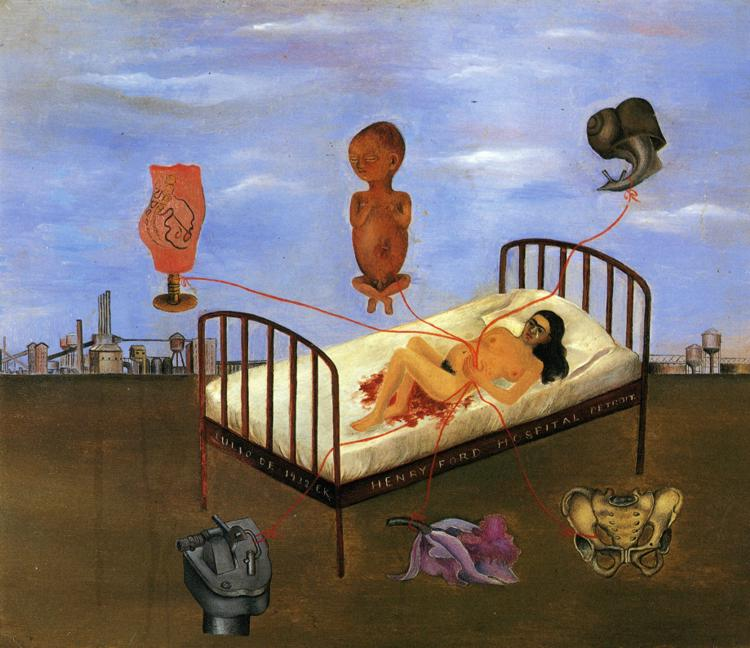
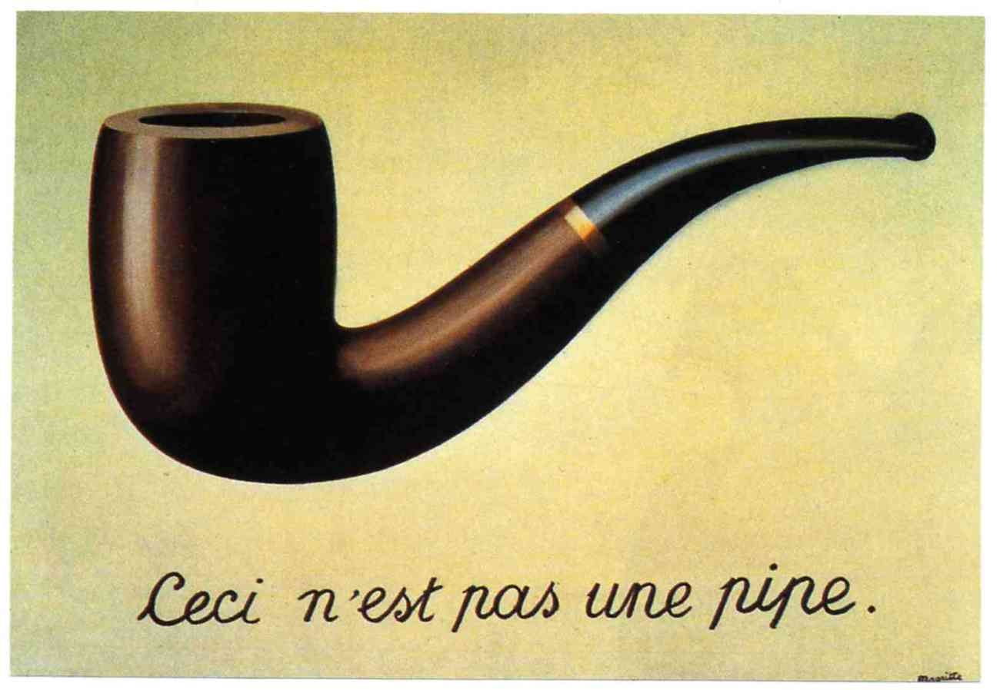

Home
Fortemente influenciado pela psicologia freudiana, o surrealismo representou uma reação contra o "racionalismo". A Traição das Imagens desafia a convenção linguística de identificar uma imagem de algo como a coisa em si. A princípio, o ponto do artista aparece simplista, quase ao ponto de uma provocação. Na verdade, este trabalho é extremamente paradoxal. O seu estilo realista e o subtítulo remete para um anúncio publicitário, uma área em que o artista teria trabalhado


